Artificial intelligence in the form of Large Language Models (LLMs) has advanced more rapidly than most researchers expected. As a result, estimates of how long it will take to develop human-level AI have shortened, accelerating speculation about the long-term dangers of AI. Far future predictions are valuable, but it is at least as important to engage with the concrete risks AI poses now. Especially since our capacity to solve long-term dangers will be determined by immediate risks: effective alignment algorithms must at least work for the easy cases we encounter at present. And, to make good collective decisions for the future, we must ensure that short-term proliferation of AI technologies does not irrevocably harm our economies and societies.
The objective of this workshop is to make progress on foreseeable and quantifiable risks of AI on the five year time scale. We will convene experts from diverse domains such as natural language processing, machine learning, safety, privacy, and law within a singular forum to understand the concrete, demonstrable risks of LLMs. Together, will examine strategies for mitigating these risks and pinpoint areas that need further exploration and development. Foremost, we seek to ground the discourse around LLM risks in a pragmatic and actionable framework.
Scientific Program
The institute will be open from TBD.
The scientific program will take place from TBD to TBD inclusively.
Each day of the workshop will consist of:
- A morning session (9:30am-noon).
- An evening session (7:30pm-9pm).
- The rest of the day will be left open for discussions and collaborations.
Sessions will cover these and other questions:
- TBD...
| Day | Time | Topic |
|---|---|---|
| 1 | 9:30am−noon | TBD |
| 7:30pm−9pm | TBD | |
| 2 | 9:30am−noon | TBD |
| 7:30pm−9pm | TBD | |
| 3 | 9:30am−noon | TBD |
| 7:30pm−9pm | TBD | |
| 4 | 9:30am−noon | TBD |
| 7:30pm−9pm | TBD | |
| 5 | 9:30am−noon | TBD |
| 7:30pm−9pm | TBD |
Background Reading
Participants are encouraged to consult the following references in advance of the workshop:
- TBD...
Participants
- Anil Ada(CMU)
- 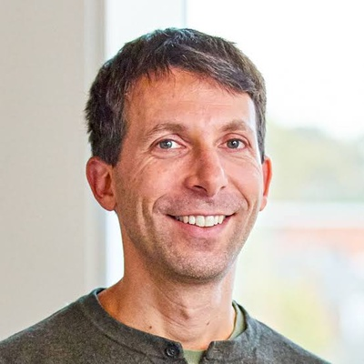David Silver(DeepMind)
- 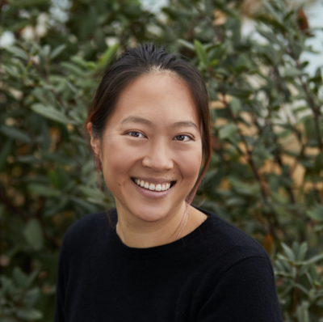Amy Zhang(UAustin/FAIR)
- 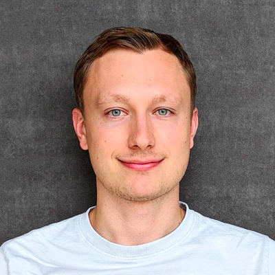Danijar Hafner(Toronto)
 Eszter Vertes(DeepMind)
Eszter Vertes(DeepMind) Yann LeCun(FAIR)
Yann LeCun(FAIR)- 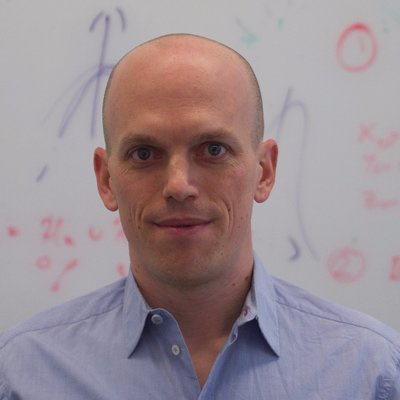Arthur Gretton(UCL)
- 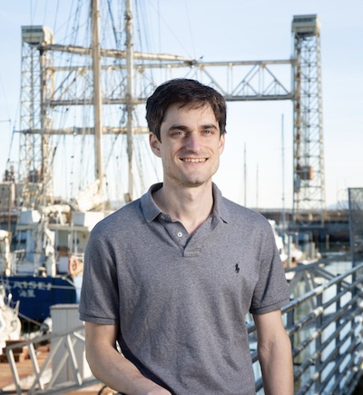John Schulmann(OpenAI)
 Timothy Lillicrap(DeepMind)
Timothy Lillicrap(DeepMind)- 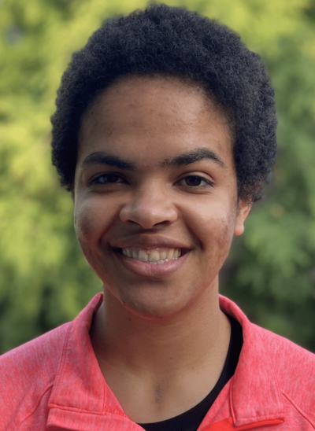Olivia Watkins (Berkeley)
- 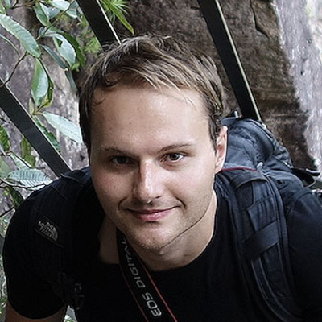Thomas N. Kipf(Brain/Amsterdam)
- 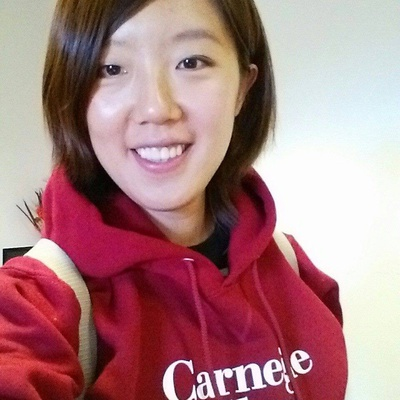Rosemary Ke(DeepMind)
- 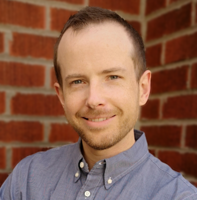Blake Richards(Mila/McGill)
- 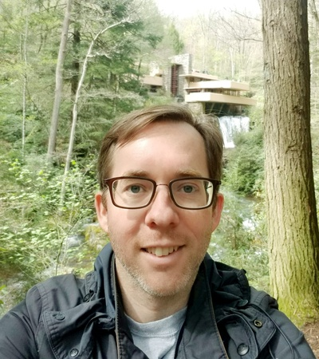Ryan O'Donnell (CMU)
- 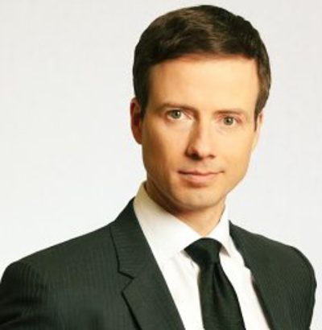Nicolas Chapados(ServiceNow)
-
 Denis Therien(ServiceNow)
Denis Therien(ServiceNow)  Neil Lawrence(Cambridge)
Neil Lawrence(Cambridge) Boaz Barak(Harvard)
Boaz Barak(Harvard)- 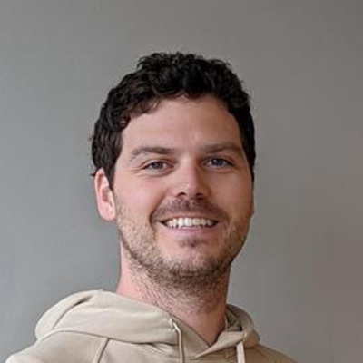Alexandre Piché(ServiceNow)
- 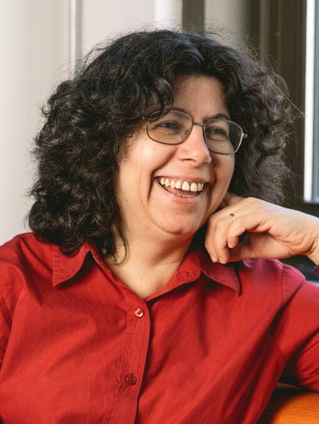Doina Precup(DeepMind/MILA)
- 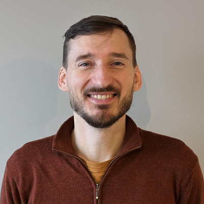Maxime Gasse(ServiceNow)
- Sylvie de Lacroix(Birmingham)
- 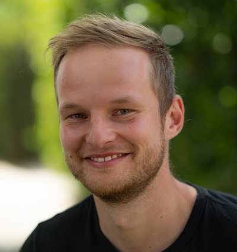Karol Hausman (Brain/Stanford)
- 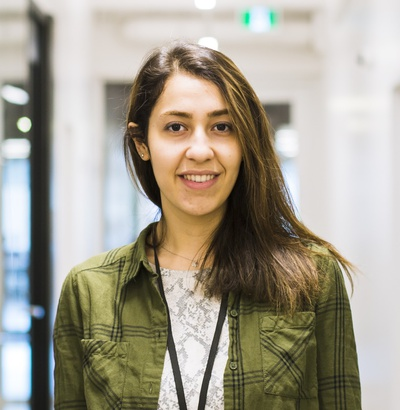Mandana Samiei (McGill/MILA)
- 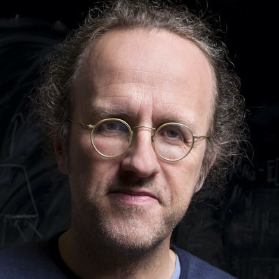Bernhard Schölkopf (Max Planck Institute)
 Dzmitry Bahdanau(ServiceNow/MILA)
Dzmitry Bahdanau(ServiceNow/MILA)- Jessy Lin (Berkeley)
- 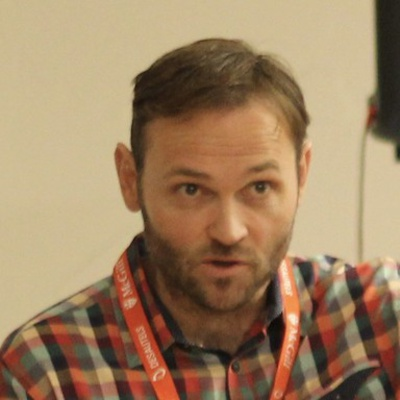Jeremy Barnes (ServiceNow)
- Laura Smith (Berkeley)
- Liam Fedus (OpenAI)
Venue
The workshop will be held at the Bellairs Research Institute of McGill University, Holetown, St. James, Barbados.
For accommodation pricing, see the official page.
Contact
- E-Mail: manager.bellairs@caribsurf.com
- Main office: (246) 422-2087
- Dining hall: (246) 422-2034
- Fax: (246) 422-0692
The Most Important House Rules
Kitchen and Food
- Breakfast is eaten together Saturday-Friday at Bellairs.
- Lunch may be purchased from a grocery store or nearby restaurants.
- Dinner is eaten together Sunday-Thursday at Bellairs.
- We can make coffee and tea in the kitchen any time we want.
- Please leave the kitchen clean.
- There is a guest fridge in the kitchen where we can keep our own private food. Please label your food and remove any left over when you depart.
Showers and Sand
- Sand in the shower drains can cause enormous blockage problems. Please be sure to rinse off the sand from your feet before entering your rooms. There are water taps outside both blocks of rooms for this purpose.
Locked Doors and Valuables
- Barbados is a rather safe country in general but normal precautions when travelling should be taken for your money and valuables.
Telephone
- Telephones and computers are available in the main office (sort of).
Bellairs Survival Hints
Food and Snacks
- We will have a cook and the food is great but if you need anything special please bring it along. There will be a fridge where we can keep our private food items.
- The coffee there is of the instant variety. If you wish to bring your own coffee you may do so.
- Vegitarians may want to bring their favorite non-perishables, however it is not necessary since there is already a diverse selection at the local supermarket. There is also good vegetarian roti in several places near Bellairs.
Beach, Sun, Snorkeling, and SCUBA diving
- Bellairs is situated on one of the best beaches in Barbados, so don't forget your bathing suit (and skin protection) for swims before breakfast and in between work sessions.
- There is also good snorkeling right in front of Bellairs so if you have a mask and fins bring them along too. In fact, if you SCUBA dive bring your gear. There is diving right there as well and air tanks at Bellairs cost only about US$12.00 per tank!
Mosquitos
- Depending on the weather conditions and other factors, we may get some mosquitoes. You should bring some bug repellant just in case.
Travel
Flying in
Please see the Barbados Official Travel Protocols for the rules that are currently in place on the island.
As of January 10, 2023, that site said "Effective midnight, Thursday September 22, 2022, Barbados will discontinue all COVID-19 related travel protocols. Therefore, there will be no testing requirements for entering Barbados whether you are vaccinated or unvaccinated."
Details for travel from the airport will be provided by email.
Map of Bellairs

For questions please contact denis.therien@servicenow.com